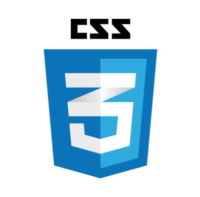

Ściąga z CSS
Z czym to się je
CSS = Cascading Style Sheets = Kaskadowe Arkusze Stylów
CSS odpowiada za prezentację treści.
Stylować = nadawać wygląd
Składnia CSS to reguły
BUDOWA REGUŁY CSS
selektor {
właściwość: wartość;
}